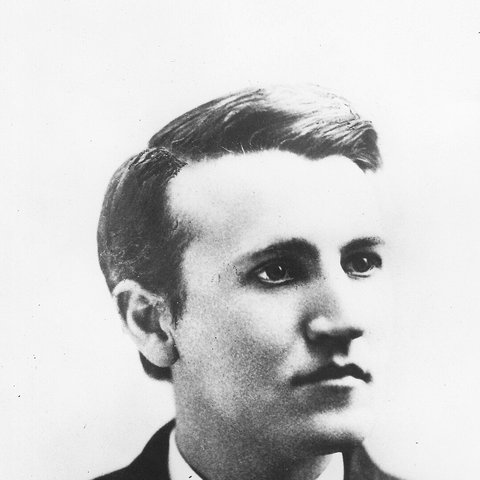
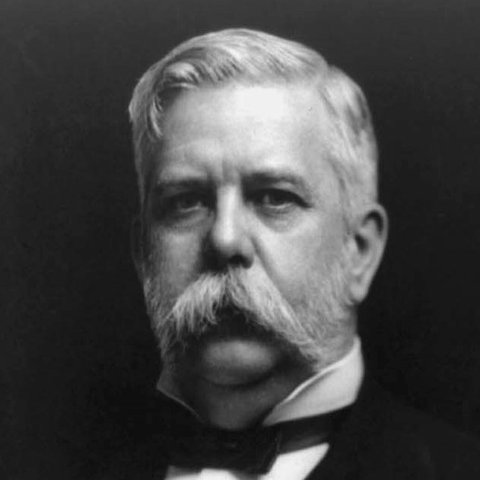
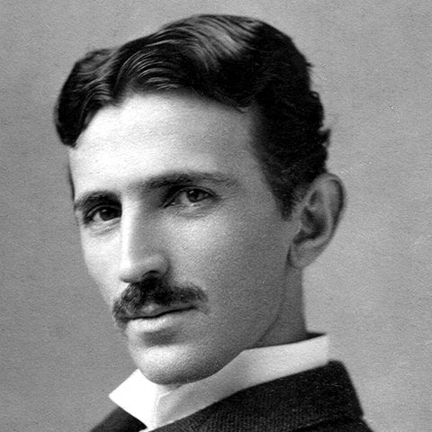
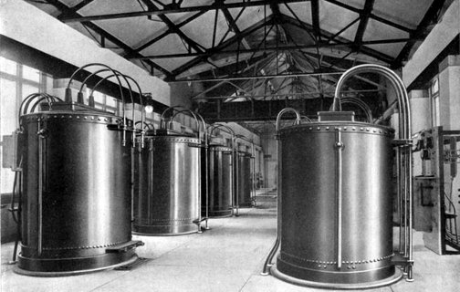
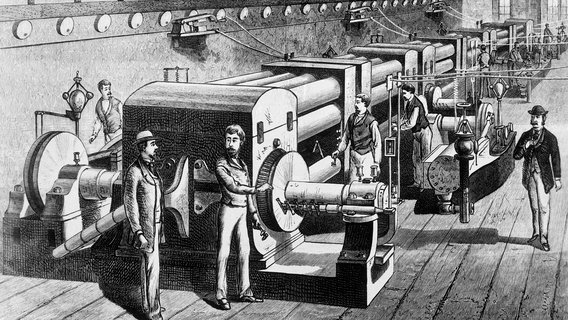
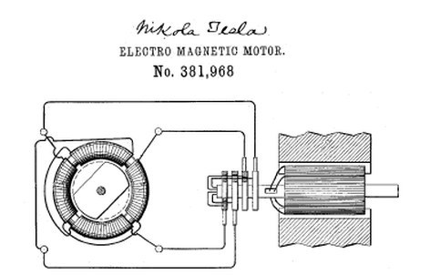
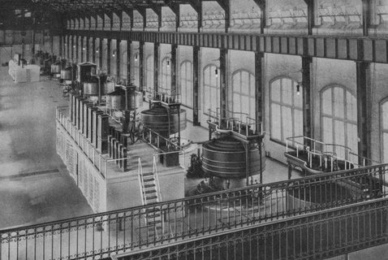
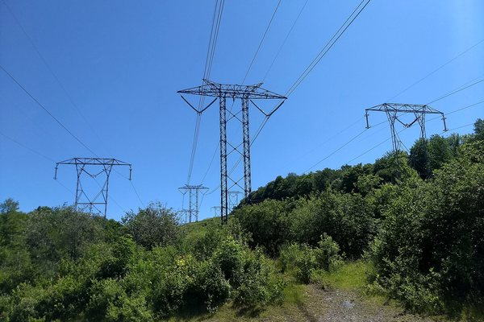

Thomas Edisonphe điện một chiều · DC
Điện một chiều 110 vôn là an toàn
Điện xoay chiều cao thế mới là thứ chết người.
Vđiện một chiều trong nhà, hệ Edison
Cuộc chiến dòng điện · nước Mỹ, 1886 – 1896

Thomas Edison
Điện một chiều · DC


George Westinghouse & Nikola Tesla
Điện xoay chiều · AC
Vòng 1 · An toàn
Điện xoay chiều cao thế mới là thứ chết người.
Máy biến áp hạ điện áp xuống trước khi vào tới nhà.

Vòng 2 · Thực tế
400 bóng đèn cho 82 khách hàng ở Manhattan.

Cứ vài khu phố lại phải xây thêm một nhà máy.
Vòng 3 · Máy móc
Nhà máy cần mô-tơ — mà mô-tơ thời đó chạy bằng điện một chiều.
Bằng sáng chế số 381.968, cấp ngày 1/5/1888 — Westinghouse mua bản quyền cùng năm.

Vòng 4 · Quy mô
Mỗi trạm là tiền đã đầu tư — đổi sang xoay chiều là bỏ đi hết.
Năm 1896, điện từ thác Niagara đi hơn 30 km tới Buffalo.

Cùng muốn điện rẻ và an toàn tới mọi nhà —
và cả hai đều đúng một phần.
Mọi điện thoại, máy tính, tấm pin mặt trời — và đường dây siêu cao áp nối các vùng xa.

Lưới điện truyền tải và phân phối tới từng nhà.